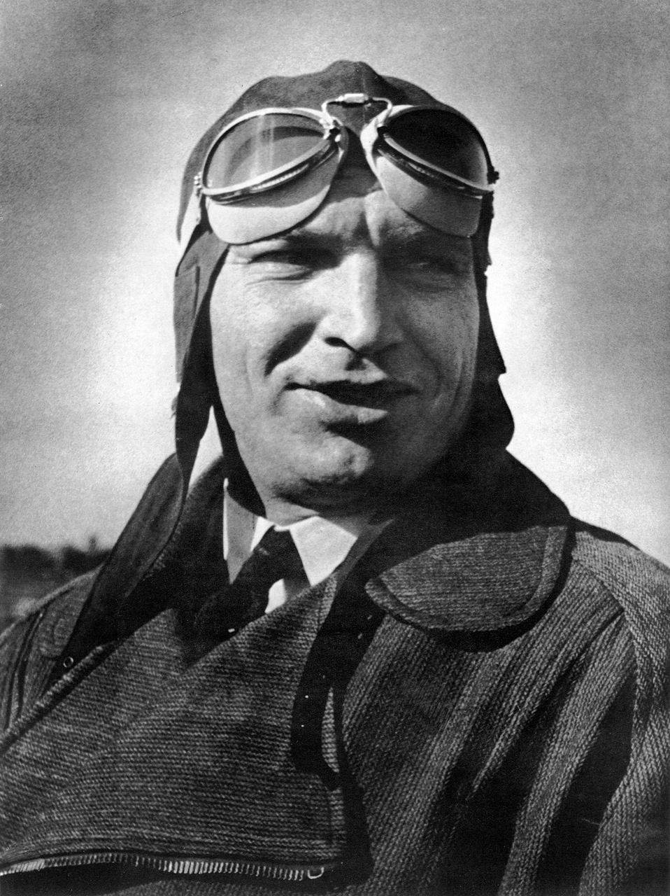

Валерий Чкалов
Легендарный советский лётчик-испытатель, Герой Советского Союза.

Мастер высшего пилотажа
Валерий Чкалов стал символом мужества и отваги для советских людей. Он разработал и внедрил десятки фигур высшего пилотажа, которые до него считались смертельно опасными.
Перелёт через Северный полюс
В 1937 году экипаж под командованием Чкалова совершил невероятное — первый в истории беспосадочный перелёт из Москвы в США через Северный полюс. Лётчики провели в воздухе 63 часа 16 минут.
А ты знал?
Чкалов был не только великим лётчиком, но и смелым новатором. Однажды он пролетел под Троицким мостом в Ленинграде на истребителе, чтобы доказать возможности машины.